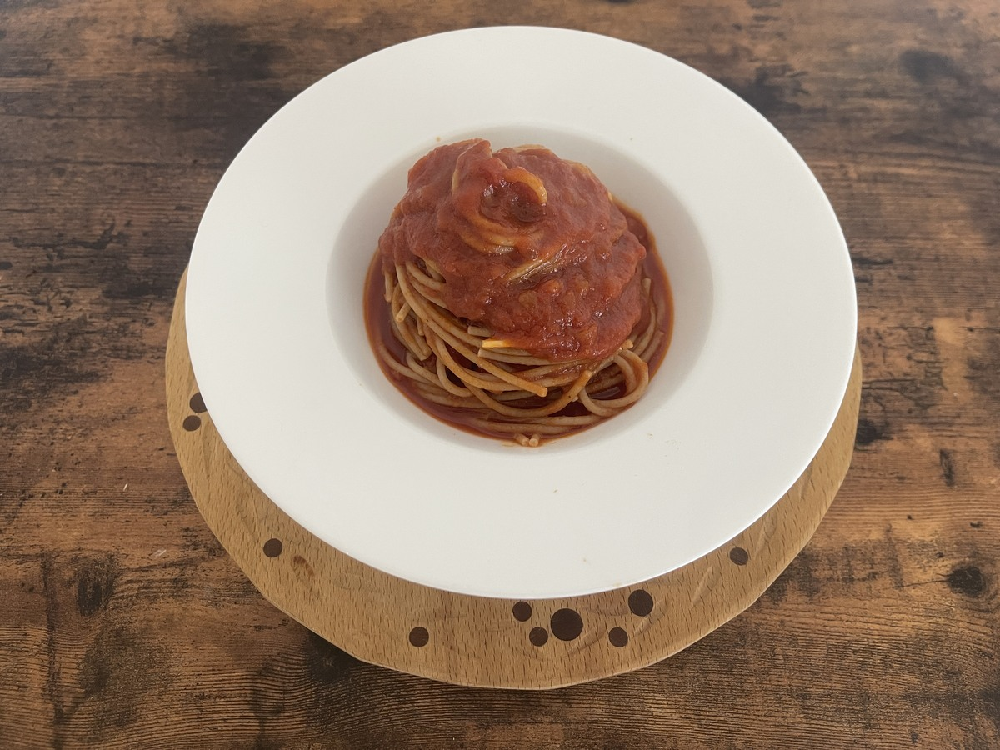
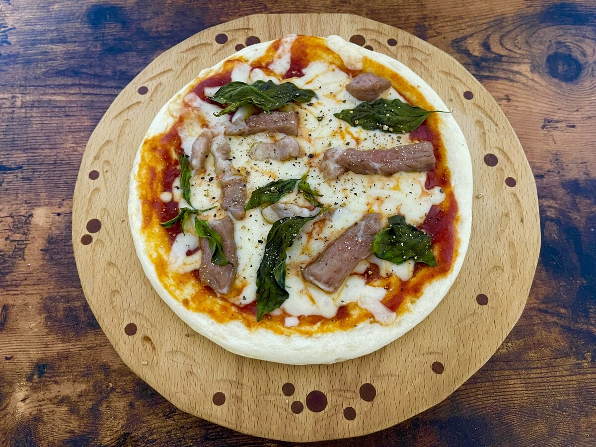
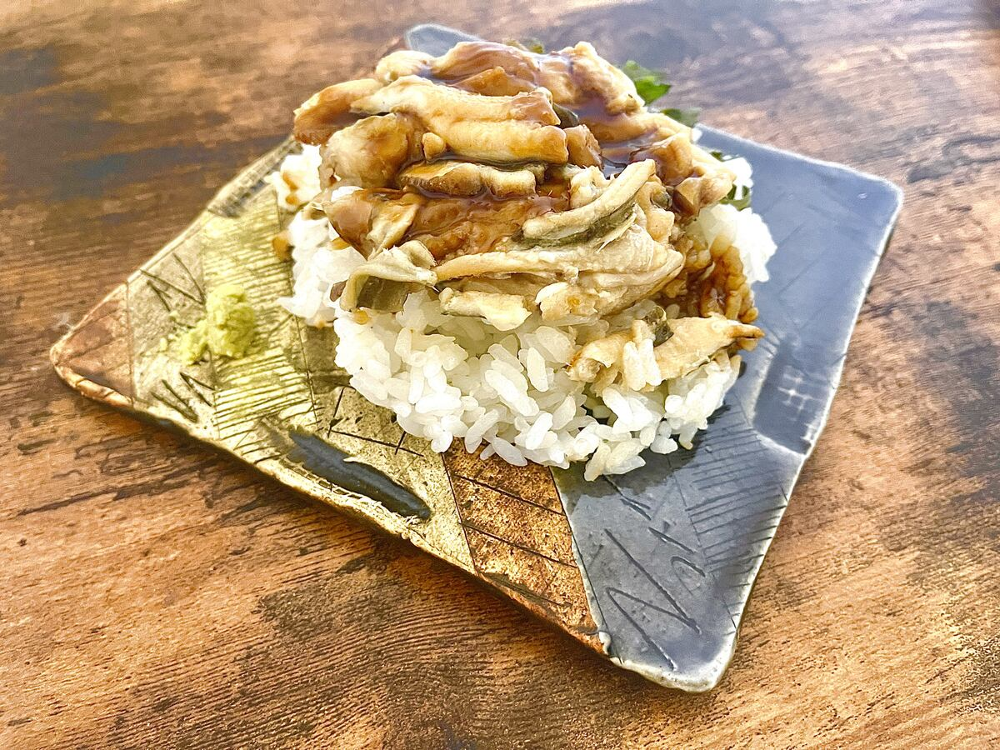
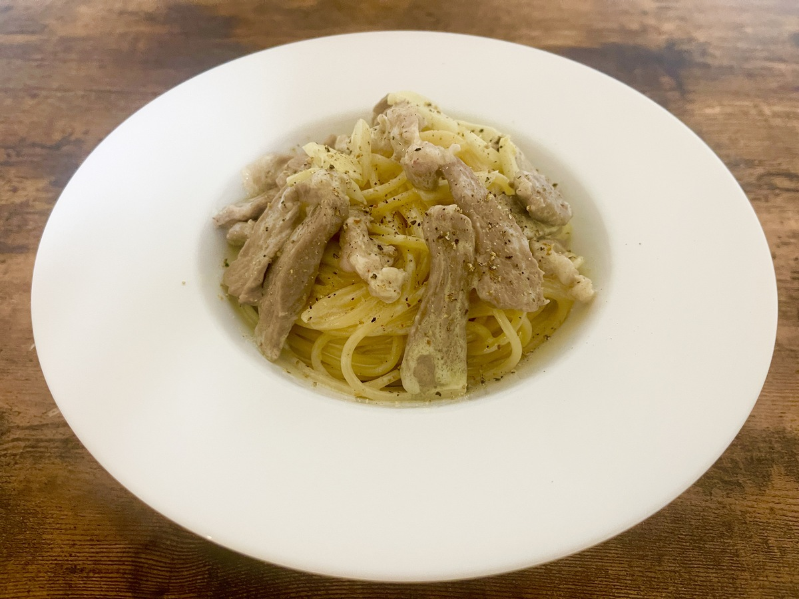
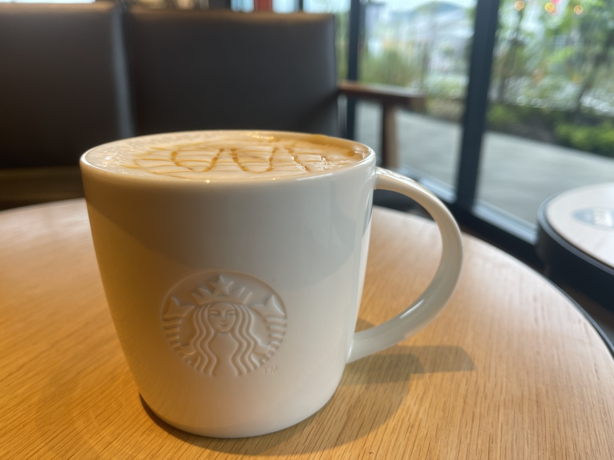
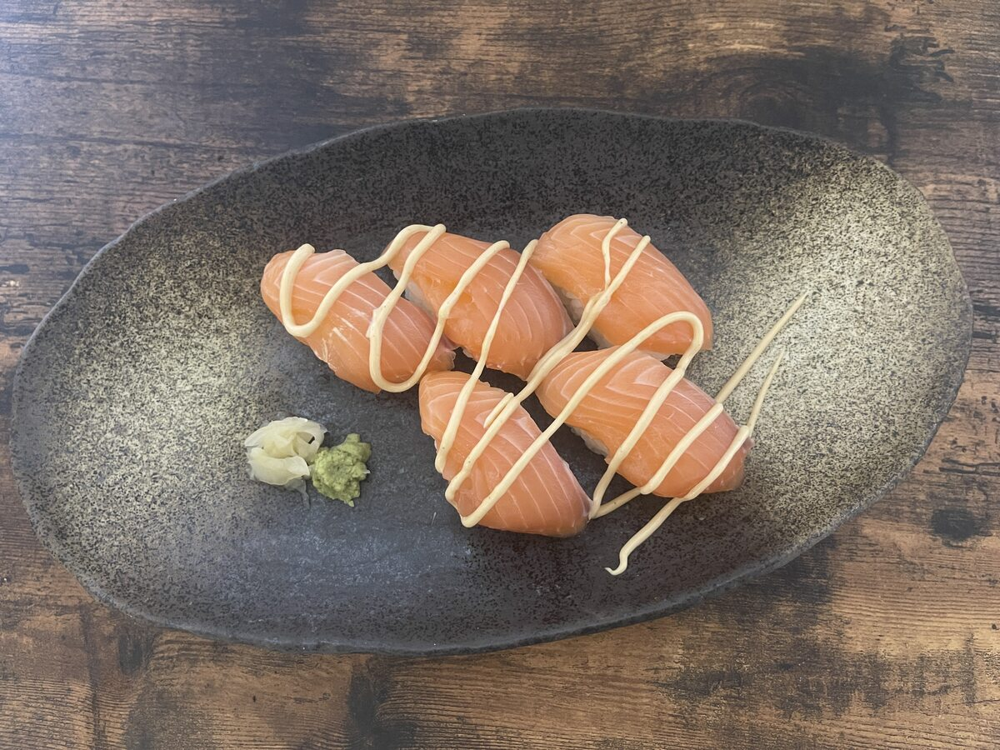
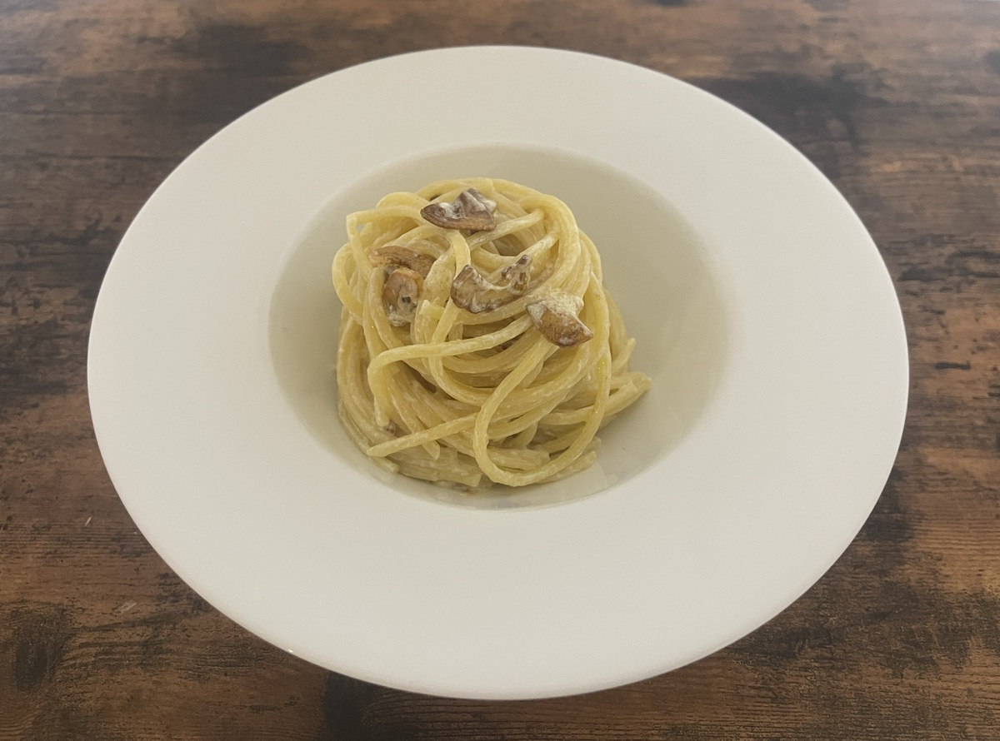

このサイトは独身の筆者のささやかな食卓を、日々Blogしています。
応援よろしくお願いします。

2025年 6月 16日
本日の食事
朝からトマトパスタを作りました。
全粒粉のオーガニックな麺を初めて使ってみました。香りがあって何にでも合う訳ではないなと思いましたが、
幸いトマトソースとの相性は悪くありませんでした。
夜は急にピザが食べたくなって、
スーパーでピザ生地とチーズを買い、朝のトマトソースの残りを使って、
豚肩ロースとスイートバジルをトッピングしたマルゲリータに。
マルゲリータは1889年にピザ職人のラファエレ・エスポジトが王妃マルゲリータ・ディ・
サヴォイアに献上したイタリアの国旗色を代表するピザだそう。(^^;;

朝：全粒粉のトマトパスタ

夜：豚肩ﾛｰｽのﾏﾙｹﾞﾘｰﾀ
2025年 6月 15日
本日の夕飯。
スーパーから買ってきたアナゴ飯と豚肉の肩ロースクリームパスタ。
豚肉の甘味はクリームとよく合って、クリームは多めに濃厚にした上で、
残っていたレモンクリームを少し合わせてさっぱりと頂きました。^_^

アナゴどどーん

豚肉のクリームパスタ
2025年 6月 14日
今日の食事。
サーモンの寿司にはキューピーの濃厚BBQソース味マヨネーズを、アレンジしてますが、、、このマヨネーズはどんな料理にも合わない。

morning

lunch

dinner
2025年 6月 13日
今日はレモンクリームパスタを頂きました。＾＾
材料： にんにく・レモン・唐辛子・生クリーム・オリーブオイル
初めてレモンクリームを作りました。生クリームにレモンの果汁を混ぜると固まりましたが、
レモンが多すぎて若干酸っぱくなりすぎた〜(>_<)
ｱｰﾘｵ•ｵｰﾘｵ•ｴ•ﾍﾟﾍﾟﾛﾝﾁｰﾉ
レモンクリーム
レモンクリームパスタ